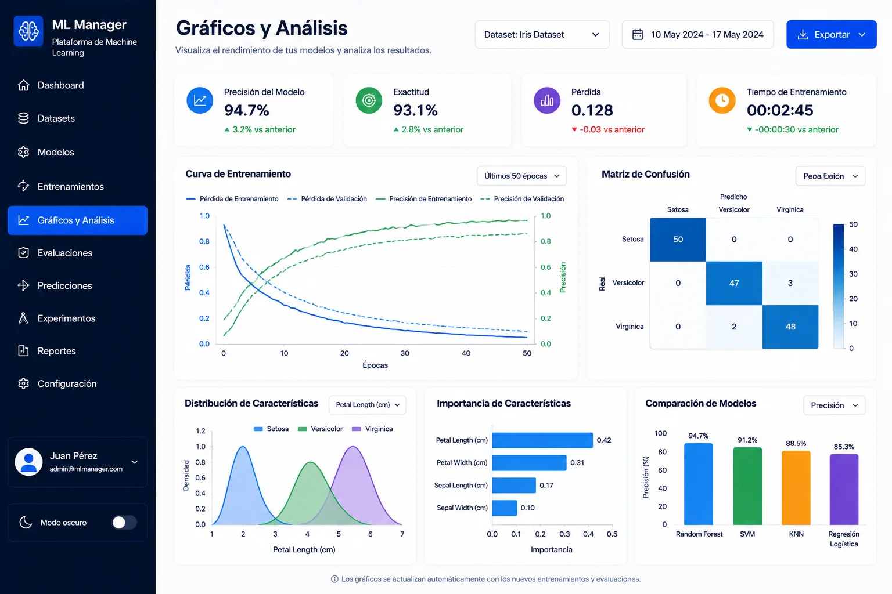
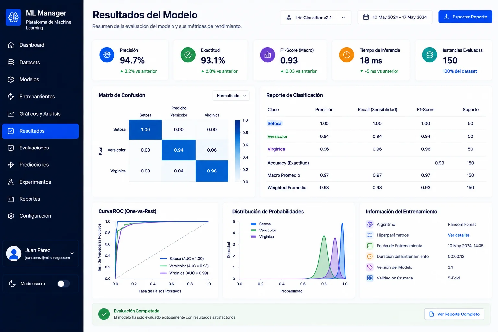

AI · MACHINE LEARNING
Machine Learning
Análisis y procesamiento de datos con modelos de clasificación y predicción, documentado mediante pantallas de dataset, visualización y resultados.

01 / Contexto
Problema y enfoque
El proyecto parte de la necesidad de trabajar con datos de forma organizada y seguir un flujo que permita explorarlos, analizarlos y visualizar el comportamiento de un modelo de machine learning.
Se documentó un flujo de trabajo alrededor de datasets, gráficos y resultados del modelo utilizando herramientas del ecosistema Python. La interfaz permite comunicar de forma visual las etapas principales del proyecto.
02 / Alcance
Qué se documentó
El caso se presenta únicamente con información y pantallas que ya formaban parte del portafolio original, sin añadir métricas ni resultados no verificados.
- 01Gestión y exploración visual de datasets.
- 02Visualización de gráficos asociados al análisis.
- 03Presentación del resultado del modelo.
- 04Uso de Python y librerías orientadas a análisis y machine learning.
03 / Gallery
El producto, a pantalla completa.
Las capturas se muestran como evidencia principal del trabajo, sin marcos decorativos que oculten la interfaz.

